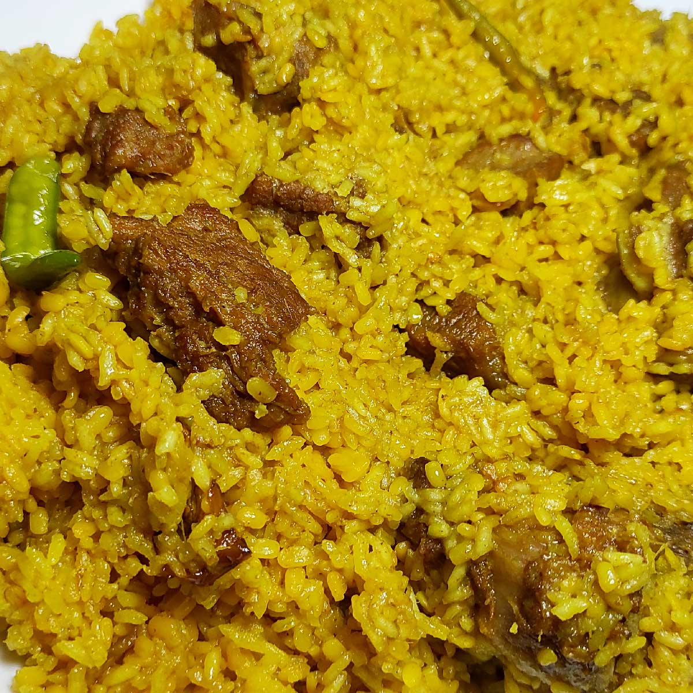

My Favorite Foods
- Biyarni

-
kicuri

TravelIn Bangladesh
The Sundarbans mangrove forest, one of the largest such forests in the world (140,000 ha), lies on the delta of the Ganges, Brahmaputra and Meghna rivers on the Bay of Bengal. It is adjacent to the border of India’s Sundarbans World Heritage site inscribed in 1987. The site is intersected by a complex network of tidal waterways, mudflats and small islands of salt-tolerant mangrove forests, and presents an excellent example of ongoing ecological processes. The area is known for its wide range of fauna, including 260 bird species, the Bengal tiger and other threatened species such as the estuarine crocodile and the Indian python.
Cox’s Bazar is a town on the southeast coast of Bangladesh. It’s known for its very long, sandy beachfront, stretching from Sea Beach in the north to Kolatoli Beach in the south. Aggameda Khyang monastery is home to bronze statues and centuries-old Buddhist manuscripts. South of town, the tropical rainforest of Himchari National Park has waterfalls and many birds.